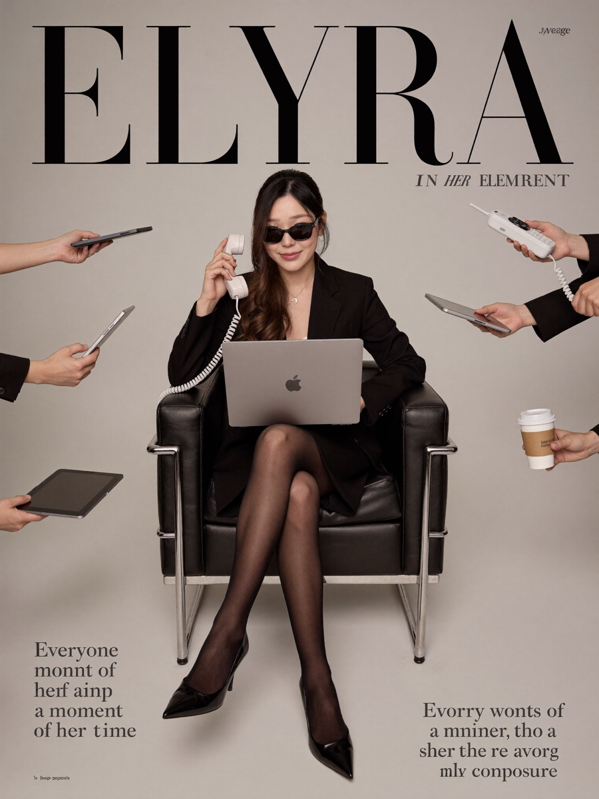
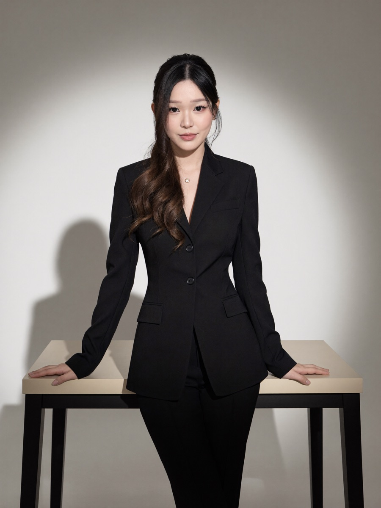
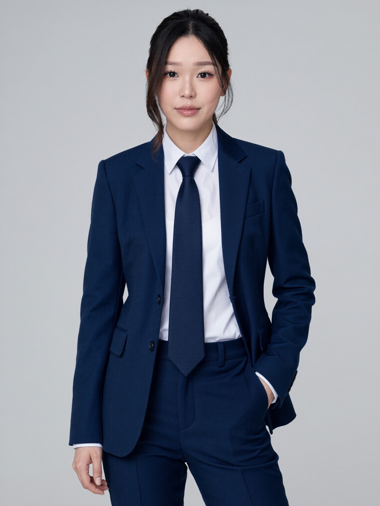
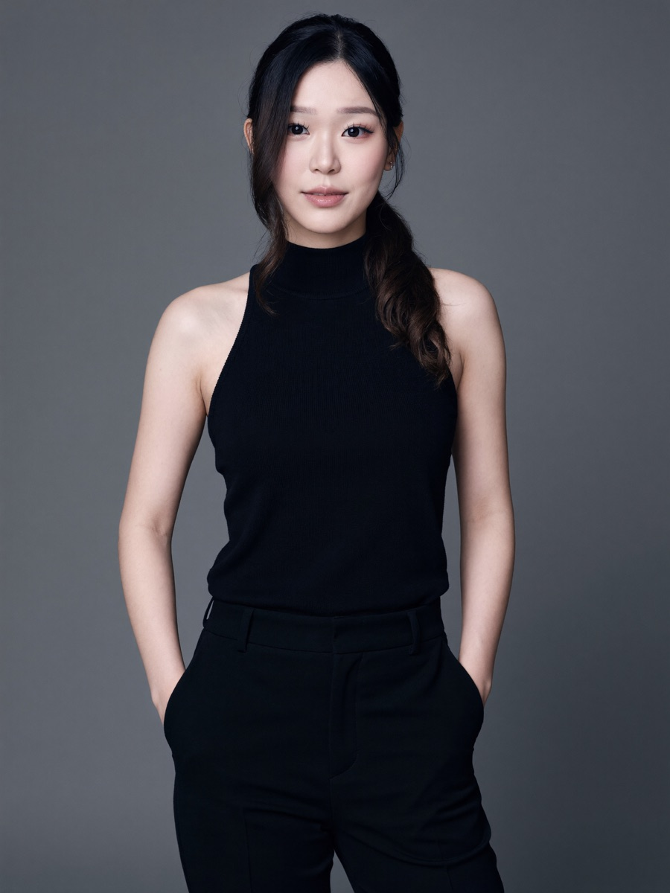
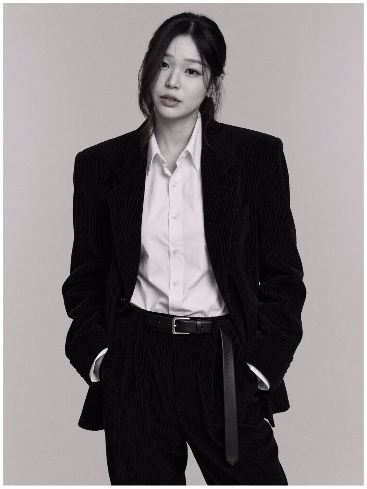
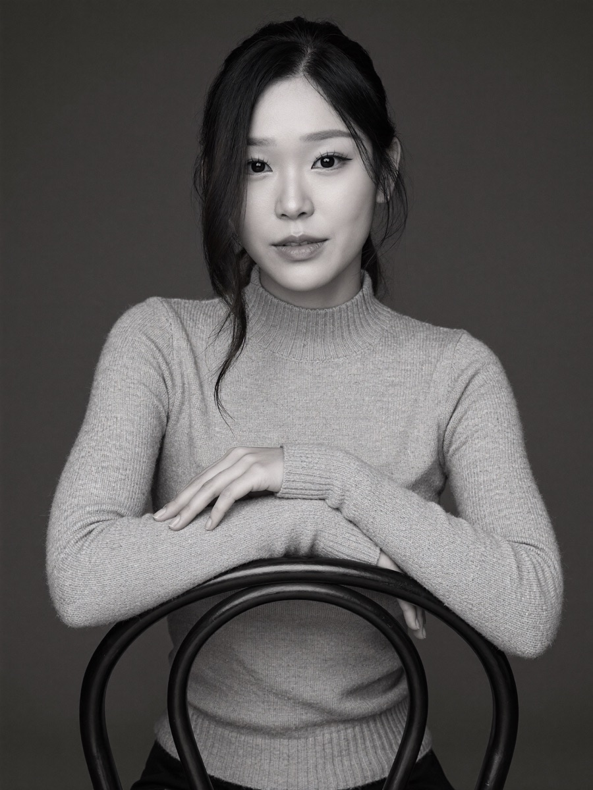
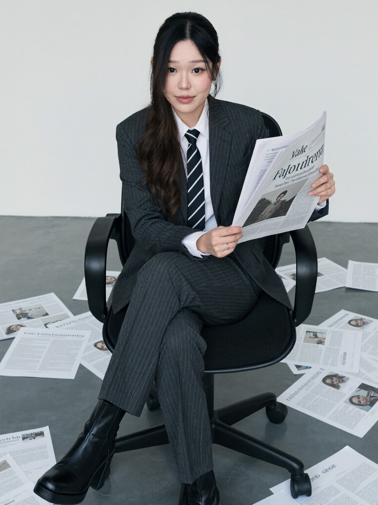
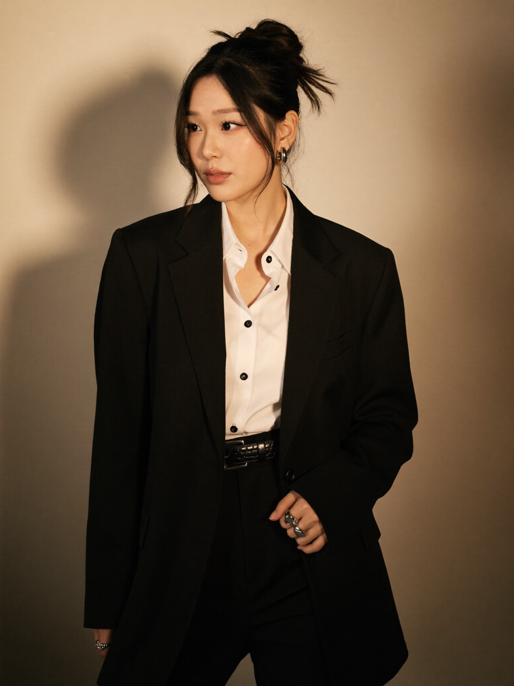
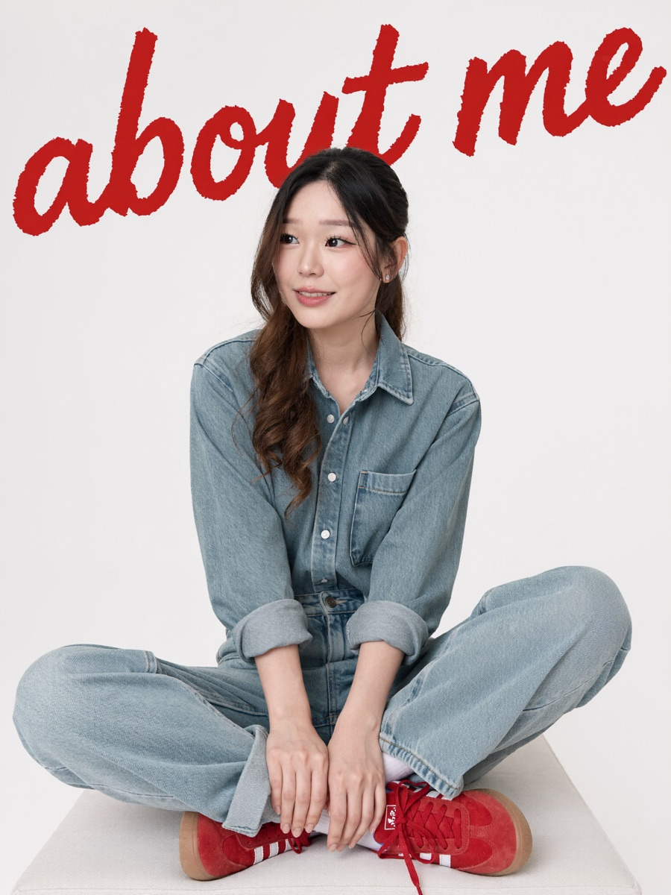

Start your free 3-day trial in Higgsfield →
Ten polished corporate looks: clean profile headshots, editorial black and whites, and full magazine covers, all genuinely you. Soul locks your real face from your own photos, so nothing reads as a filter or a stranger. Here is the actual set these prompts produce:



Every image in this guide is me, generated from a folder of my own photos. No camera, no studio, no photographer.
Put together 10 to 20 clear, front-on photos of yourself (a few clean, well-lit ones help the most). Upload them into the chat, then ask Higgsfield to build your character with its Soul model:
Using Higgsfield, create a Soul character of me from the photos I just uploaded. Keep it photoreal and true to my face.Once it is ready, run any prompt below and add "using my character". Ask for 4 variations at a time and keep the ones you love.
Three safe-but-striking looks for your actual profile photo. Left to right below: the navy suit, the ivory silk, the black knit.

A straight-on studio medium shot of me in a crisp tailored navy blue suit jacket and trousers with a white dress shirt and a matching navy tie, straight dark hair in a neat professional bun with a few loose strands framing my face, one hand casually tucked into my pocket. Plain light-grey background with a clean gradient, soft even diffused light with gentle shadows under the jaw, palette of deep navy, pure white and soft skin tones, cropped just above the knees. Professional, composed and coolly confident. Keep my face true to my reference photos.A straight-on medium-full shot of me standing against a smooth neutral grey studio backdrop, wearing a loose glossy ivory silk blouse with a partially unbuttoned collar tucked into high-waisted matte black tailored trousers with visible crease lines, hands in my pockets in a relaxed posture. Soft split-front lighting evenly lights my face, minimalist monochromatic black and ivory palette, medium telephoto lens with a moderate depth of field softly blurring the background. Fresh, poised and professional. Keep my face true to my reference photos.A straight-on mid-length studio portrait of me in a sleeveless high-neck black knit top and matching high-waisted matte black trousers, hair tied back in a low soft ponytail, minimal natural makeup, hands tucked into my pockets, gaze confidently to camera. Grey softly lit seamless background, diffuse light with gentle shadows and smooth transitions, neutral understated palette. Cool, modern and elegantly understated. Keep my face true to my reference photos.Higher drama, same professionalism. Left to right: the spotlight pantsuit, the corduroy black-and-white, the backward chair.


A straight-on mid-length studio portrait of me in a sharply tailored matte black pantsuit with structured shoulders, notched lapels and straight-cut trousers, both hands resting on either end of a beige table with square black legs. Long dark hair parted in the centre in soft loose waves. A seamless neutral grey wall behind me lit by a pronounced spotlight that forms a bright oval and grades into shadow, my body casting strong defined shadows to the left for drama. Black, beige and muted grey palette. Confident, assertive and elegant. Keep my face true to my reference photos.A straight-on medium shot of me in a high-fashion pose, body angled and head tilted back, gazing at the camera with a pensive expression, a few strands of hair falling across my face. An oversized black corduroy suit jacket with padded shoulders over a crisp white button-up shirt, hands in the pockets of matching corduroy trousers cinched with a long vintage-style belt. Seamless grey studio background, soft diffused light with subtle sculptural shadows, rendered in classic black and white. Sophisticated, cool and contemplative. Keep my face true to my reference photos.A straight-on medium close-up of me seated on a backward metal chair against a plain dark studio backdrop, in a ribbed slightly glossy knit turtleneck, arms resting over the chair's curved backrest, dark hair tucked loosely behind my ears with a few tousled strands, a neutral composed expression. Grayscale monochrome palette with dramatic skin highlights and soft shadows, medium focal length, shallow depth of field. Contemplative, minimal and quietly elegant. Keep my face true to my reference photos.The scroll-stoppers. Left to right: the magazine cover, the newspaper power move, the golden-light blazer.


An editorial magazine-cover medium shot of me in a sleek black blazer and skirt, seated confidently in a minimalist black armchair with crossed legs, semi-sheer black tights, pointed heels and modern sunglasses. I hold a retro corded phone in one hand with a laptop on my lap, and disembodied hands reach in from the frame offering a phone, a tablet and a coffee cup. Large serif masthead text reading "ELYRA" with the lines "IN HER ELEMENT" and "Everyone wants a moment of her time, but she never loses her composure." Seamless pale grey backdrop, soft even studio light, monochrome blacks and greys. Stylish, aspirational and subtly humorous. Keep my face true to my reference photos. (Swap "ELYRA" and the lines for your own masthead.)A straight-on medium shot of me sitting with my legs crossed in a black mesh office chair, reading a newspaper, surrounded by scattered papers on a muted grey floor. I'm in a tailored charcoal pinstripe suit, a structured blazer and matching creased trousers, a crisp white collared shirt and a diagonally striped black-and-white tie, polished black leather platform ankle boots. Sleek straight hair, subtle makeup. Clean background, diffuse ambient light, slate grey, black and white palette. Cool, composed and businesslike. Keep my face true to my reference photos.A warm-toned studio portrait of me standing against a plain beige wall that casts a subtle shadow beside me, head turned to my left gazing off camera. Sleek black hair in an updo, shiny silver hoop earrings and statement rings. A slightly oversized matte black structured blazer over a crisp white collared shirt left partially unbuttoned, black tailored trousers and a glossy black belt. Golden directional light from my left with soft diffused shadows, deep blacks and crisp whites with warm tan accents, minimalist editorial look. Chic and confident. Keep my face true to my reference photos.The tenth is for your personal site, portfolio, or a fun "off-duty" post: casual, warm, and still on-brand.

A straight-on medium-full shot of me seated cross-legged on a neutral ottoman, in loose light-wash denim jeans and a matching oversized denim shirt with rolled sleeves, vibrant red Adidas sneakers with white stripes and white crew socks. Hair parted down the middle in loose waves, natural minimal makeup, a subtle smile, gazing off to the left. Large bold painterly red script text reading "about me" fills the upper background. Soft shadow-free studio light, off-white background, palette of light-blue denim, white and vivid red. Clean, modern and approachable. Keep my face true to my reference photos. (Swap the words "about me" to retitle it.)📸 Higgsfield (3-day free trial, run it in ChatGPT): higgsfield.ai
🤖 ChatGPT: chatgpt.com (add Higgsfield from the apps and plugins directory)
Build AI systems with me through recorded lessons you can follow at your own pace. Join the waitlist for first access and the founding price.